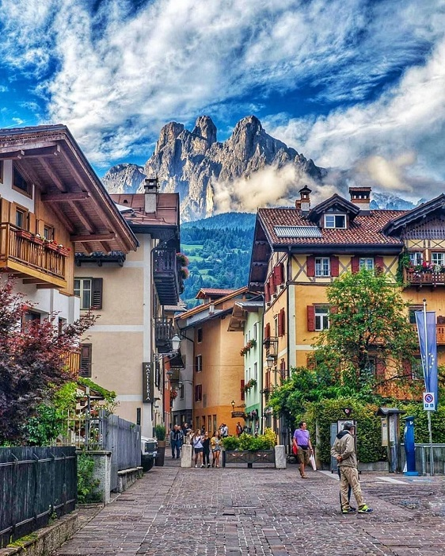
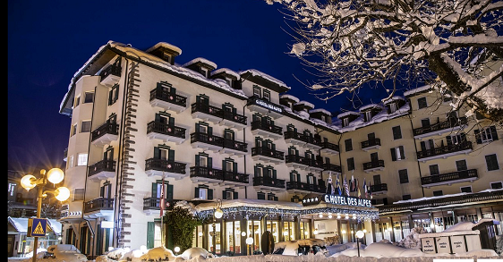
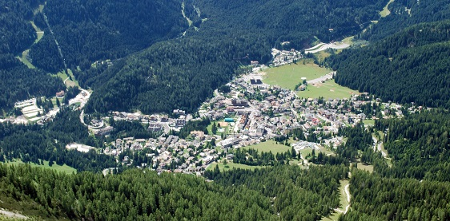
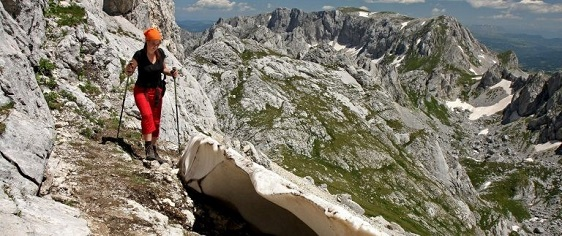
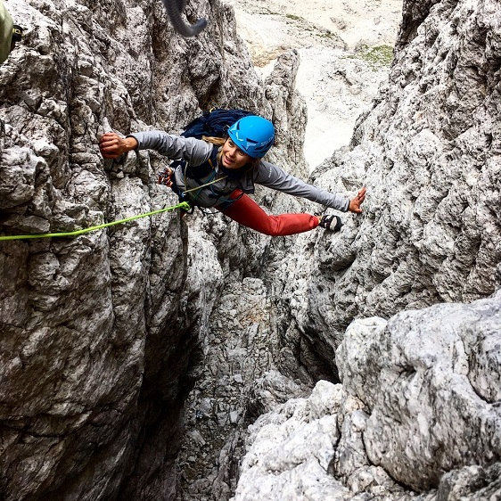
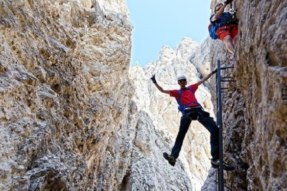

Welcome to ASIC 2021
The Twentieth Annual Summer Interdisciplinary Conference, held at Grand Hotel Des Alpes, Via Passo Rolle 118, 38054 San Martino di Castrozza TN, in the Dolomites of Italy.

The conference had talks every afternoon and evening on the six consecutive days, Wednesday July 14 to Monday July 19, 2021 (the last talks were held the evening of July 19). These dates were chosen to allow attendees to combine ASIC 2021 with the Mathematical Psychology Meetings and the Cognitive Science Society Meetings, held later that July in Vienna, Austria.

Grand Hotel Des Alpes is highly rated with two well-regarded restaurants; see the hotel website. It has a conference room that ASIC used when attendance allowed (otherwise a city conference center 200 meters distant). Breakfasts and dinners were held in the hotel, with breaks catered at the meeting-room site.
San Martino di Castrozza
San Martino sits in the eastern Dolomites of Italy, about two hours by car north of Venice — a famous resort town in both winter and summer, offering a huge range of activities in summer.

The nearest international airports are Venice (about two hours south by car) and Innsbruck (about three hours north by car), also accessible by train and bus.
Activities
San Martino and the surrounding area offer a huge array of summer activities, including hiking, scrambling and peak bagging, via ferrata, mountain and road biking, rock climbing, mountaineering, paragliding, and canyoning, plus leisure activities such as sightseeing, fishing, tennis, and golf.
Organizer
Richard M. Shiffrin of Indiana University – Bloomington is the organizer (see the Contact tab for all contact info).
About the conference
The subject matter of ASIC conferences is interdisciplinary, with a primary emphasis on a wide variety of scientific domains within the broad frame of cognitive science. ASIC follows the successful format of previous ASIC and AIC conferences: days are free for leisure activities and discussion among participants, talks are in the late afternoon and early evening, followed by dinner.
Invitation
The conference is open to all interested parties and their family and friends — no invitation is needed to attend. Due to the small number of speaking slots, if too many attendees wish to speak, the organizer adapts talk lengths and/or selects speakers.
Conference format
There is a single speaking session each day (no posters), intentionally organized to maximize the dissimilarity of each day's presentations. The conference began with registration and a reception with drinks and food from about 15:30–16:15 on Wednesday, July 14. On subsequent days there were drinks and light snacks from about 15:45–16:15, followed by a session of about seven or eight spoken presentations that may have included a mid-session break. The last evening of talks was Monday, July 19.
For a listing of all past ASIC sites, see the previous ASIC sites document.
Registration
Registration was made through the Indiana University Conference Bureau, with the fee covering conference-room rental, equipment, and catering for breaks and receptions.
Fee schedule (US dollars)
| Payment window | Attendee | Guests (age 6+) |
|---|---|---|
| Prior to Feb. 15, 2021 | $200 | $120 |
| Feb. 16 – May 15, 2021 | $250 | $150 |
| After May 15, 2021 | $300 | $180 |
"Guests" are friends and family members not attending talks but attending the reception at the start of each session.
Persons staying at sites other than Grand Hotel Des Alpes could take dinner at the conference hotel for 25 euro per person per dinner, paid directly to the hotel.
Lodging
A block of rooms was held at Grand Hotel Des Alpes in San Martino di Castrozza, in the Dolomites of Italy, about two hours north of Venice.
This highly rated 4* hotel has an excellent restaurant; see the hotel website. Address: Via Passo Rolle 118, 38054 Primiero San Martino di Castrozza, Italy. Telephone: +39 0439 769069 (manager Maurizio Rimaldi does not speak English well; an Italian speaker on the call may help). The hotel has a pool, hot tub, high-speed wifi, spa, bar/lounge, free parking, business center, and shuttle bus service.
Lodging rates (half board, includes breakfast and dinner)
Each attendee made their own reservation, paying lodging charges directly at checkout.
| Room type | Rate |
|---|---|
| One person, smaller room (5 available) | 107 €/day |
| One person, larger room (7 available) | 122 €/day |
| One person, additional larger rooms | 140 €/day |
| Two persons in a double | 92 €/person/day |
Some doubles could accommodate additional beds for families, with discounts for children under 12 (30%), under 7 (40%), and under 2 (60%). Four connecting doubles were also available for families at 92 €/day per person regardless of age. Attendees staying elsewhere could take meals with the group at 25 euro per person per meal.
Reservations
Email the organizer for the conference code; reservations could then be made by email (informazioni@hoteldesalpes.it) or telephone (+39 0439 769069).
Cancellation policy
Free cancellation until May 10; 10% penalty after May 10; 15% penalty after June 10; 100% penalty after July 4 (an emergency cancellation after July 4 allowed the deposit to be used for a future stay).
Schedule
Each day began with a reception with refreshments and light food near or in the conference room, starting about 15:30–15:45. Talks ran roughly 16:00–20:00, followed by group dinner.
Dining & Receptions
A generous buffet breakfast was included in the daily lodging price.
Breakfast was available 8:00–10:00 AM (an earlier start could be arranged with the hotel the evening before). A dinner with menu options was served in the hotel restaurant when sessions ended, including vegetarian and vegan choices — attendees were asked to order the prior night to reduce dinner time.
Daily receptions
Each day there was a catered reception with drinks and finger food near the conference room (whether at the hotel or the city conference room) prior to the speaking session — about 15:15 on July 14, about 15:45 on subsequent days. The registration fee covered these receptions; guests and family members attending only receptions had a reduced registration fee.
Travel
San Martino is in Trentino, in the heart of the Dolomites UNESCO World Heritage Site.
Detailed transportation options: sanmartino.com/getthere. San Martino can be reached by car, bus, or train plus a bus ride. The closest international airport is Venice Marco Polo (car travel a little over two hours), with regional airports and more distant international airports such as Milan Malpensa and Innsbruck also options.
Activities
San Martino is an outstanding outdoor adventure destination in the Dolomites of Italy, with 145 hiking trails, 27 long-distance trails, and 5 thematic trails, plus two summer cable cars (Colverde-Rosetta and Tognola).

Hiking
See outdooractive.com and sanmartino.com/hikes for many options.
Mountaineering, scrambling & peak bagging
More than 100 choices, ranging from strenuous hikes to scrambles to technical ascents; see outdooractive.com. Some routes require technical equipment or too much time for a conference day and are best done before or after ASIC.
Rock climbing
Many rock-climbing areas near San Martino allow a return in time for the conference. As usual, ASIC offered one or two group climbing days at reduced pricing, aimed at all climbers but particularly newcomers, with topropes placed for novices and more challenging routes for stronger climbers in the same area.

Via ferrata
A family-friendly favorite offering high mountain exposure and scenic views without technical climbing skill, attaching to iron cables affixed to the rock faces.

Canyoning
Excellent canyoning opportunities in Val Noana — participants don wetsuits and, with guides, descend a mountain stream in a narrow canyon, suitable for families and children.
Parasailing
Tandem flights with an expert guide, lifting off from a hillside or cliff, ascending thermals and landing in a field. Several local guiding services offer this experience.
Road & mountain biking
The San Martino area has many opportunities for both forms of biking.
White-water rafting
A favorite activity for families and individuals, at several areas near (though not immediately adjacent to) San Martino.
Leisure activities
The area has many leisure activities including golf, tennis, and adventure parks.
Contact
Email is preferred for all correspondence.
Conference organizer
Rich Shiffrin
Indiana University – Bloomington
shiffrin@indiana.edu
Tel: 812-855-4972 · Fax: 812-219-5892
Webmaster / Conference Coordinator
Ruth Eberle
Phone: (812) 856-5722
reberle@indiana.edu
Postal address
Annual Summer Interdisciplinary Conference (ASIC 2021)
c/o Prof. Richard Shiffrin, Psychological and Brain Sciences Department
Indiana University, 1101 E. 10th St., Bloomington, IN 47405